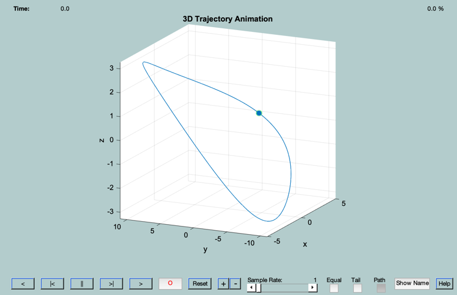
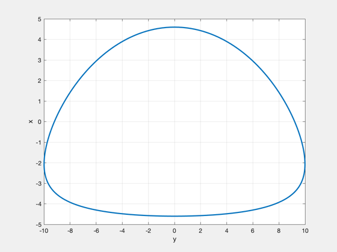
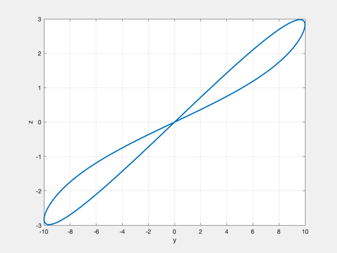
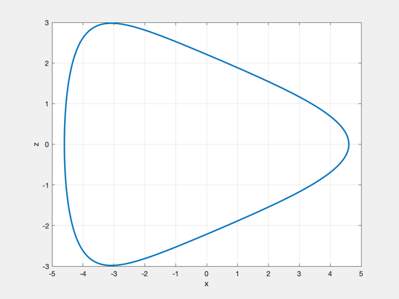
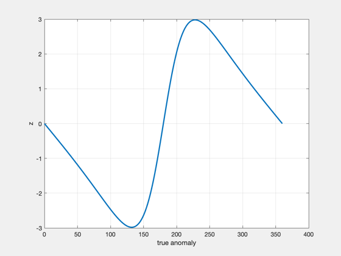

Demonstrate an example relative trajectory with an eccentric reference orbit
Since version 7.
------------------------------------------------------------------------
Usage:
EccTrajDemo;
------------------------------------------------------------------------
See also ViewHills, OrbRate, RVOrbGen, RV2El
------------------------------------------------------------------------
kD2R = pi/180;
a = 46000;
e = 0.67;
i = 62.8*kD2R;
W = 0*pi/180;
w = 0*pi/180;
M = 0;
di = -0.005*kD2R;
de = -0.0001;
dw = 0;
dW = 0; 0.005*kD2R;
el0 = [a,i,W,w,e,M];
el1 = el0 + [0,di,dW,dw,de,0];
T = 2*pi/OrbRate(a);
sc = ViewHills( el0, el1, T, 'keplerian' )
N = size(sc(1).r,2);
t = linspace(0,T,N);
[r0,v0]=RVOrbGen(el0,t);
nu = zeros(1,N);
for i=1:N
[el,E,nu(i)] = RV2El(r0(:,i),v0(:,i));
end
figure, plot(sc.r(2,:),sc.r(1,:),'linewidth',2), grid on, zoom on, xlabel('y'), ylabel('x')
figure, plot(sc.r(2,:),sc.r(3,:),'linewidth',2), grid on, zoom on, xlabel('y'), ylabel('z')
figure, plot(sc.r(1,:),sc.r(3,:),'linewidth',2), grid on, zoom on, xlabel('x'), ylabel('z')
figure, plot(nu*180/pi,sc.r(3,:),'linewidth',2), grid on, zoom on, xlabel('true anomaly'), ylabel('z')
sc =
struct with fields:
r: [3×1001 double]
v: [3×1001 double]
t: [1×1001 double]

    